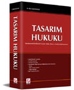

|
Günümüzde
fikri ve sýnai haklar yatýrýmlarýn korunmasýnda önemli bir
araç haline gelmiþtir. Bu baðlamda geliþmiþ ülkeler giriþimcilerinin
bu haklarýný korumak için geliþmekte olan ülkelere fikri ve
sýnai haklara yeterli koruma saðlamasý için önemli baskýlar
yapmaktadýr. Bu baskýlar sonuç vererek Dünya Ticaret Örgütü'nü
kuran anlaþmanýn eklerinden biri olan Ticaretle Baðlantýlý
Fikri Mülkiyet Haklarý Anlaþmasý (TRIPS), 150'ye yakýn devlet
tarafýndan imzalanarak kabul edilmiþtir. Konuya iliþkin Avrupa
Birliðinde de çok önemli geliþmeler yaþanmaktadýr. Bu baðlamda
AB-Türkiye arasýndaki Gümrük Birliðini kuran 1/95 Sayýlý Ortaklýk
Konseyi Kararý ile TRIPS hukukumuzu derinden etkilemiþtir.
1995 tarihi fikri mülkiyet hukukumuz bakýmýndan bir milattýr.
Bu tarihte konuya iliþkin bir dizi yasal düzenleme yapýlmýþ
ve konuya iliþkin ihtilaflarý çözmek üzere Ýhtisas Mahkemesi
kurulmuþtur. Sonraki tarihlerde bu düzenlemelere yenileri
eklenmiþ ve konuya iliþkin mahkeme kararlarý þekillenmeye
baþlamýþtýr. Yasal düzenleme ve mahkeme kararlarý yanýnda
bilimsel çalýþmalara her geçen gün yenisi eklenmektedir. Bu
baðlamda fikir ve sanat eserleri, patentler ve markalara iliþkin
eserler verilmiþtir.
Endüstriyel
tasarýmlar, diðer ülke hukuklarýnda olduðu gibi hukukumuzda
da hak ettiði ilgiyi görmediði her fýrsatta dile getirilirdi.
Av. Dr. Cahit SULUK'un kaleme aldýðý TASARIM HUKUKU (Seçkin
Yayýncýlýk, Ankara, 2003, 784 sayfa) adlý hacimli eser bu
yargýyý bertaraf etmiþ görünmektedir. Zira Dr. SULUK, kaleme
aldýðý eserle endüstriyel olan ve olmayan tüm tasarýmlarý
içine alan ve tasarýmýn hukuki yönüne iliþkin tüm sorunlarý
inceleyerek Türk Hukukuna çok önemli katkýlarda bulunmuþtur.
Eser, hukukçular yanýnda patent ve marka vekilleri, endüstriyel
tasarýmcýlar, mimarlar, mühendisler ve bilirkiþiler gibi konuyla
ilgili tüm kesimler bakýmýndan bir baþucu kitabý niteliðindedir.
Hukukumuzda konunun bu denli derinlemesine incelendiði baþka
bir eser bulunmamaktadýr.
Dr.
SULUK, yapýtýnda kaynak hukuk olan Avrupa Birliði Hukukuna
ve AB'ye üye diðer geliþmiþ ülke hukuklarýndaki düzenleme,
mahkeme kararlarý ve öðretideki görüþlere de yer vermiþtir.
Yazar ayrýca konuya iliþkin 100 civarýnda Yargýtay kararýna
da yer vererek uygulamada konunun nasýl anlaþýldýðýný yansýtmýþtýr.
Böylece yazar bir yandan teorik çalýþmasýný pratikle birleþtirmiþtir.
Sonuçta bu eser, hem teorik hem de pratik ihtiyaçlara uygun
olarak kaleme alýnmýþtýr.
Dr.
SULUK, eserini dört bölümde kaleme almýþtýr. Birinci Bölümde,
tasarýmlar hakkýnda genel bilgilere yer vermiþtir. Yazar Ýkinci
Bölümde, tescilli tasarýmlarý tüm yönleriyle incelemiþtir.
Dr. SULUK, Üçüncü Bölümde, tescilsiz tasarýmlarla ilgili AB
Hukukunda ve Ýngiliz Hukukundaki düzenlemelerden yola çýkarak
hukukumuz bakýmýndan yeni düzenleme bakýmýndan model öneride
bulunmuþtur. Yazar eserinin Dördüncü ve Son Bölümünde ise,
tasarýmlar bakýmýndan kümülatif korumayý (çoklu korumayý)
incelemiþtir. Bu baðlamda yazar tasarýmlara marka, fikir ve
sanat eserleri ve haksýz rekabet mevzuatýna göre hangi þartlarda
ve kapsamda koruma saðlanacaðýný ele almýþtýr.
Burada
þunu da belirtelim ki, Yazarýn Önsözü'nde de iþaret ettiði
gibi; "... kitabýn baþlýðý her ne kadar Tasarým Hukuku
adýný taþýsa da, bu çalýþmada EndTasKHK, PatKHK ve MarKHK'daki
düzenlemelere karþýlaþtýrmalý olarak yer verilmeye çalýþýlmýþtýr.
O nedenle elinizdeki eser, ortak konular bakýmýndan tasarým
hukuku yanýnda patent, faydalý model ve marka hukukuna iliþkin
açýklamalarý da içermektedir". Bu nedenle, eser her ne
kadar TASARIM HUKUKU baþlýðýný taþýsa da, baþta sýnai hak
kategorisine giren patent, faydalý model ve markalar yanýnda
fikir ve sanat eserlerini de kapsayan, yani fikri mülkiyetin
geneline iliþkin açýklamalarý da içermektedir. O nedenle okuyucu,
bir yandan tasarým hukukuyla ilgili bilgi edinirken diðer
yandan fikri mülkiyetin tamamý hakkýnda da bir fikir edinme
fýrsatý bulacaktýr.
Kitabýn detaylý incelemesi:*
Dünyada
son zamanlarda fikri mülkiyet hukuku alanýnda baþ döndürücü
bir geliþme yaþanmaktadýr. Baþta 1/95 Sayýlý Gümrük Birliði
Kararý (1/95 Sayýlý OKK) ve Ticaretle Baðlantýlý Fikri Mülkiyet
Haklarý Anlaþmasý (TRIPS) olmak üzere dýþ etkilerle ülkemizdeki
geliþmeler de böyledir. Gerçekten Türkiye, 1995 tarihinde
fikri mülkiyet hukukuyla ilgili bir dizi mevzuat çýkartarak
bu alanda bir reform gerçekleþtirmiþtir.
Hemen
belirtmek gerekir ki, fikri mülkiyet alanýnda neyin ne kadar
korunacaðý meselesi, dünyanýn dört bir yanýnda yasa koyucularý
uzun süre düþündürmüþ, bugün düþündürmeye de devam etmektedir.
Fikri mülkiyet haklarýnýn üvey evladý olarak nitelenen tasarýmlarda
ise, durum daha da karmaþýktýr. Tasarýmlar, fikir ve sanat
eserleri ile patentler (ve faydalý modeller) arasýnda sýkýþýp
kalmýþtýr. Bazý ülkeler tasarým kavramýndan sadece estetik
nitelikteki çalýþmalarý anlarken, bazýlarý teknik yönü olan
çalýþmalarý da bu kavramýn içine sokmaktadýr. Tüm bunlardan
dolayý tasarýmlarla ilgili olarak, Avrupa Birliði (AB) ve
Benelüx Hukuku bir yana býrakýlýrsa, neredeyse dünyadaki ülke
sayýsýnca farklý anlayýþ ve düzenleme bulunmaktadýr.
Patent,
marka ve fikir ve sanat eserlerine oranla tasarýmlarýn, ekonomideki
yerinin daha küçük olmasý nedeniyle tasarýmlara ilgi de az
olmuþtur. Konuyla ilgili sektörler bakýmýndan durum böyle
olduðu gibi hukukçular arasýnda da en az bilinen fikri hak
türü, tasarým hakkýdýr. Ancak son zamanlarda tasarýmlarýn
ticari hayattaki rolüne paralel olarak tasarým hukukunun da
önemi artmýþtýr. Nitekim baþta AB olmak üzere deðiþik hukuk
düzenlerinde konuya iliþkin yeni düzenlemelere gidilmesi bunun
en açýk kanýtýdýr.
Kafalarýn
bu kadar karýþýk olduðu, az bilinen ve teknik yönü aðýr basan
bir alanda kalem oynatmak cesaret ister. Hele fikri mülkiyet
hukuku alanýnda çok az çalýþmanýn yapýldýðý, fikir ve sanat
eserleri, patent ve marka gibi temel konularýn dahi henüz
özümsenmediði ülkemizde Tasarým Hukuku adlý bir esere imza
koymak daha fazla cesareti gerektirir. Dr. Suluk, bu cesareti
göstermekle kalmamýþ, ayný zamanda bu kadar karmaþýk bir konuyu
derinlemesine, tüm yönleriyle ve büyük bir vukufla inceleyerek
Türk Hukukuna çok önemli katkýlarda bulunmuþtur.
Yazar bu çalýþmasýný dört bölüm ve 16 paragrafa ayýrarak incelemiþtir.
Dr. Suluk, çalýþmasýnda mukayeseli hukuka da yer vermiþtir.
Bu baðlamda özellikle konuya iliþkin mehaz hukuk olan Topluluk
Hukukundaki düzenlemeleri irdelemiþ, konuyla ilgili ulusal
ve uluslararasý öðretiye yer vermiþtir. Yazar, eserinde 100
civarýnda Yargýtay kararýný geniþ bir þekilde ele alarak,
konunun uygulamasýna ýþýk tutmuþtur. Yazarýn Önsözü'nde de
iþaret ettiði gibi; "... kitabýn baþlýðý her ne kadar
Tasarým Hukuku adýný taþýsa da, bu çalýþmada EndTasKHK, PatKHK
ve MarKHK'daki düzenlemelere karþýlaþtýrmalý olarak yer verilmeye
çalýþýlmýþtýr. O nedenle elinizdeki eser, ortak konular bakýmýndan
tasarým hukuku yanýnda patent, faydalý model ve marka hukukuna
iliþkin açýklamalarý da içermektedir".
Yazar,
eserinin Birinci Bölümünde tasarýmlar hakkýnda genel bilgi
vermiþtir. Bu bölüm üç paragraftan müteþekkil olup, Ýlk Paragraf
tasarým kavramýna ayrýlmýþtýr. Bu paragrafta tasarýmýn tanýmý,
unsurlarý, çeþitleri ve tasarým korumasýnýn önemi ve iþlevi
ayrýntýlý olarak açýklanmýþtýr. Tasarýmýn çeþitleri açýklanýrken;
tescilli ve tescilsiz tasarýmlar, endüstriyel olan ve endüstriyel
olmayan tasarýmlar, iki ve üç boyutlu tasarýmlar, estetik
ve teknik (iþlevsel) tasarýmlar ve moda tasarýmlarý gibi teknik
yönleri de bulunan birçok kavram ayrýntýlý olarak incelenmiþtir.
Birinci
Bölümün Ýkinci Paragrafýnda tarihi geliþim ele alýnmýþtýr.
Bu baðlamda dünyadaki geliþme, konuya iliþkin uluslararasý
anlaþmalara yer verilerek açýklanmýþtýr. Bu paragrafta ayrýca
(AB)'deki ve Türkiye'deki konuya iliþkin geliþme ele alýnmýþtýr.
Bu yapýlýrken sýnai hak kategorisine giren patent, faydalý
model ve markalarla ilgili geliþime iliþkin açýklamalara da
yer verilmiþtir.
Birinci
Bölümün üçüncü ve Son Paragrafýnda ise, tasarým hukukunun
yakýn hukuk dallarý ile iliþkisi incelenmiþtir. Burada fikri
mülkiyetin diðer alýnlarýndan fikir ve sanat eserleri, patentler,
faydalý modeller, markalar, coðrafi iþaretler, yarý iletkenlerin
topografyalarý ticaret unvaný ve iþletme adlarý ve veri tabanlarý
kavramlarý ayrý ayrý açýklanarak bunlarýn, tasarýmlarla iliþkisi
kurulmuþtur. Bu paragrafta ayrýca tasarýmlarýn, rekabet hukuku
ve kiþilik hukuku ile iliþkisine yer verilmiþ olup, haksýz
rekabetle iliþkisi kitabýn onaltýncý paragrafýnda incelendiði
için, oraya gönderme yapýlmakla yetinilmiþtir.
Eserin
Ýkinci Bölümü tescilli tasarýmlara ayrýlmýþtýr. Bu bölüm eserin
adeta gövdesini oluþturmaktadýr. Dördüncü Paragrafta, tasarým
hakký ve bu hakka iliþkin ilkeler irdelenmiþtir. Bu paragrafta
tescil, bölünmezlik, ülkesellik, öncelik, ön kullaným, tükenme
ve kümülatif koruma ilkeleri ayrýntýlý olarak açýklanmýþtýr.
Bu ilkelere iliþkin açýklamalar kural olarak patent, faydalý
model ve markalar bakýmýndan da geçerlidir. O nedenle yazar,
bu açýklamalarý yaparken fikri mülkiyeti düzenleyen diðer
KHK'lardaki düzenlemelere de yer verme ihtiyacý duymuþtur.
Beþinci
Paragraf, tasarýmlarý koruma þartlarý olan yenilik ve ayýrt
edici nitelik kavramlarýna ayrýlmýþtýr. Bu paragrafta ayýrt
edici nitelik incelemesi bakýmýndan dikkate alýnmasý gereken
kriterler tek tek ele alýnmýþ, ayrýca koruma þartlarý bakýmýndan
önem taþýyan kamuya sunma kavramý açýklanmýþtýr.
Altýncý
Paragrafta, korumanýn kapsamý, süresi, sýnýrlarý ve koruma
dýþý hallere yer verilmiþtir.
Yedinci
Paragraf, tasarýmcý, tasarým sahibi ve bunlarýn tasarým üzerindeki
haklarý baþlýðýný taþýmaktadýr. Bu paragrafta tasarýmcýnýn
adýnýn belirtilmesi, tasarým sahipliði ve tasarým sahibinin
tasarým üzerindeki haklarý ayrý ayrý inclenmiþtir.
Sekizinci
Paragraf, baþvuru ve tescile ayrýlmýþtýr. Bu paragrafta baþvurunun
yapýlmasý, baþvurunun incelenmesi, yayým ve yayýmýn ertelenmesi,
itiraz, tescil ve tescil usulleri ele alýnmýþtýr. Yazar burada
Türk Patent Enstitüsü'nün uygulamalarýna da yer vermiþtir.
Dokuzuncu
Paragrafta, baþvurunun ve tasarým hakkýnýn hukuki iþlemlere
konu olmasý ele alýnmýþtýr. Bu paragrafta özellikle devir
ve lisans ayrýntýlý olarak açýklanmýþ, miras, rehin, haciz
ve intifa iþlemlerine kýsaca deðinilmiþtir.
Onuncu
Paragrafta, hükümsüzlük ve hakkýn sona ermesi incelenmiþtir.
Uygulamada bu paragrafýn önemi büyüktür. Zira ülkemizde tescil
ettirilen birçok tasarým koruma þartlarýný taþýmadýðý için
hükümsüz kýlýnmaktadýr. O nedenle yazar, konunun teorik alt
yapýsýný kurduktan sonra bu husustaki Yargýtay kararlarýna
geniþ olarak yer vermiþtir.
Onbirinci
Paragraf, tecavüz kavramýna ayrýlmýþtýr. Yazar burada tescilli
tasarým hakkýna tecavüzü ele aldýðý gibi baþvuru hakkýna tecavüzü
de incelemiþtir. Bu paragrafta yazar ayrýca tecavüz halleri,
tecavüzün belirlenmesinde kullanýlacak kriterler ve elektronik
ortamda tasarým hakkýna tecavüz durumlarýný irdelemiþtir.
Ýkinci
Bölümün son ve eserin Onikinci Paragrafýnda, tecavüz halinde
ileri sürülebilecek talep ve açýlabilecek davalar bütün yönleriyle
incelenmiþtir. Bu baðlamda ihtiyati tedbirler ve gümrükte
el koyma, hukuk davalarýnda ileri sürülebilecek talepler,
hukuk davalarý, ceza davalarý ve bunlara iliþkin yargýlama
usulleri ayrý ayrý ele alýnmýþtýr.
Eserin
Üçüncü Bölümü ve Onüçüncü Paragrafý tescilsiz tasarýmlara
ayrýlmýþtýr. Bu bölümde Dr. Suluk, tescilli ve tescilsiz korumayý
karþýlaþtýrarak birbirine üstün ve zayýf yönleri üzerinde
durmuþtur. Yazar daha sonra konuya iliþkin Ýngiliz ve Topluluk
Hukukunda tescilsiz tasarýmlara iliþkin düzenlemeleri incelemiþ
ve Türk Hukuku bakýmýndan model önerisinde bulunmuþtur.
Eserin
Dördüncü ve Son Bölümü üç paragraftan oluþmaktadýr. Dr. Suluk,
Ondördüncü Paragrafta, tasarýmlarýn marka mevzuatýyla korumasýný
ele almýþtýr. Yazar, oldukça karmaþýk olun bu konuya iliþkin
düzenlemeleri inceledikten sonra Yargýtay'ýn kararlarýna yer
vermiþtir. Yazar daha sonra, hukukumuzdaki düzenlemeden ne
anlaþýlmasý gerektiði konusunda kiþisel ve özgün görüþlere
yer vermiþtir.
Onbeþinci
Paragrafta, tasarýmlarýn fikir ve sanat eserleri mevzuatýyla
korunmasý ele alýnmýþtýr. Bir önceki paragrafta olduðu gibi
bu paragrafta incelenen konu da oldukça tartýþmalýdýr. Tasarýmlar
bakýmýndan kümülatif koruma (çoklu koruma) ilkesi benimsendiði
için yazar FSEK'teki konuyla ilgili düzenlemeleri ayrýntýlý
bir þekilde inceleme ihtiyacý duymuþtur.
Eserin
son ve Onaltýncý Paragrafýnda, tasarýmlarýn haksýz rekabet
mevzuatýyla ne derecede ve hangi þartlarda korunacaðý hususu
öðreti ve Yargýtay kararlarý ýþýðýnda incelenmiþtir. Dr. Suluk,
Yargýtay'ýn, konuya iliþkin müstakar kararlarý yanýnda farklý
yöndeki kararlarýný da ele alarak uygulamadaki durumu yansýtmaya
çalýþmýþtýr.
Dr.
Suluk, kitabýnýn Sonuç Kýsmýnda konuya iliþkin temel bilgilere
kýsa kýsa deðindikten sonra, ulaþtýðý sonuçlarý özetleyerek
de lege feranda (olmasý gereken hukuka dair) önerilerde
bulunmuþtur.
Yukarýda
yapýlan açýklamalar da dikkate alýnarak eserle ilgili þu tespitleri
yapmak mümkündür:
- Edebi
bakýmdan bazý aksaklýklar olsa da uslubün yerinde olduðu
söylenebilir. Bu kadar aðýr ve teknik bir konunun bu kadar
baþarýlý bir þekilde kaleme alýnmasý doðrusu uslubün baþarýlý
olduðunu göstermektedir. Konunun aðýrlýðý, okuyucuyu okurken
aðýr olmaya zorlamaktadýr. Ancak bu durum, tamamen konunun
doðasýndan kaynaklanmakta olup, uslüp hatasýyla bir ilgisi
yoktur.
- Son
olarak belirtmek gerekir ki, eser her ne kadar Tasarým Hukuku
baþlýðýný taþýsa da, baþta sýnai hak kategorisine giren
patent, faydalý model ve markalar yanýnda fikir ve sanat
eserlerini de kapsayan, yani fikri mülkiyetin geneline iliþkin
açýklamalarý da içermektedir. O nedenle okuyucu, bir yandan
tasarým hukukuyla ilgili bilgi edinirken diðer yandan fikri
mülkiyetin tamamý hakkýnda da bir fikir edinme fýrsatý bulacaktýr.
- Eser,
teorik bakýmdan zengin olduðu gibi uygulamanýn ihtiyaçlarýna
da cevap verecek þekilde kaleme alýnmýþtýr. Gerçekten eserde,
baþta mehaz hukuk olan Topluluk Hukuku olmak üzere yabancý
hukuklara iliþkin düzenlemeler, yabancý öðretideki görüþler
ve mahkeme kararlarýna etraflý bir þekilde yer verilmiþtir.
Bu baðlamda konuya iliþkin Yargýtay'ýn 100 civarýnda kararý
kitaba iþlenmiþ ve yorumu yapýlmýþtýr.
*
Av. Ahmet T. Keþli
Daha
Fazla Bilgi için:
Yazarýn
Diðer Kitaplarý:
- Avrupa
Topluluðu Hukukunda Tasarýmlarýn Korunmasý - Topluluk Tasarýmý,
Cahit Suluk / ISBN: 975 347 572 1 / 16×23.5 cm. / 238 Sayfa
/ Seçkin Yayýncýlýk
Daha önce kitap düzeyinde ele alýnmamýþ bir konuya açýklýk
getiren bu kitapta, 'Topluluk Tasarýmý' bütün yönleriyle
ele alýnmýþtýr. Topluluk Hukukunda 2002 tarihli Topluluk
tasarým Tüzüðü ile, 1994 tarihinde yürürlüðe giren Topluluk
Markasý model alýnarak, yeni bir hak türü oluþturulmuþtur:
Topluluk Tasarýmý. Böylece 1971 tarihli Benelüx düzenlemesi
bir tarafa býrakýlýrsa dünyada tasarýmlar bakýmýndan ülkesel
korumadan bölgesel korumaya geçilmiþtir. Topluluk Tasarýmýnýn
kabulü fikri mülkiyet haklarýndaki uluslararasý korumanýn
giderek gerekli hale geldiði günümüzde bu haklar bakýmýndan
çok önemli bir adým ve kazanýmdýr. Bu baðlamda Avrupa Topluluðu
hukukunda tasarýmlar, kurum þartlarý, hak sahipliði, baþvuru
ve tüzel hukuki iþlemle hükümsüzlük, davalar ve yetkili,
görevli makamlar incelenmiþtir....
Kitapta bulunan Konulardan Bazýlarý Þunlardýr: Kavram ve
Ýlkeler, Koruma Þartlarý, Koruma Kapsamý, Korumanýn Sýnýrlarý,
Koruma Dýþý Haller, Baþvuru ve Tescil, Hak Sahibi, Hakkýn
Niteliði, Hukuki Ýþlemler, Hükümsüzlük, Yargý Yetkisi ve
Yargýlama Usulü, Tescilsiz Tasarým, Ýlgili Mevzuat.
-
Yedek Parça Tasarým Hakkýnýn Korunmasý, Cahit Suluk
/ ISBN: 975 8380 40 0 / 16×23.5 cm. / 405 Sayfa / Yargý
Yayýnevi
|